Cada projeto com a foto do japamala pronto, as medidas, os materiais, o mapa da contagem das 108 contas e o passo a passo foto por foto, do primeiro nó até a borla. Mesmo que você nunca tenha feito.
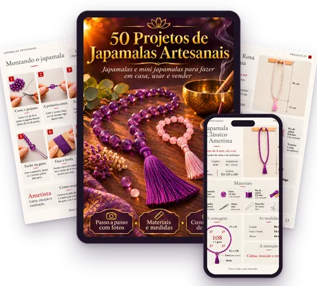
Faz o seu mantra ou o seu Ho'oponopono contando nos dedos, se perde no meio das repetições e começa tudo de novo.
Na loja, um japamala passa de R$ 100, e você nem sabe quem fez nem com qual energia.
Os vídeos mostram as contas, mas pulam o nó entre cada uma, o fechamento na guru e a borla.
Cento e oito contas parecem muita coisa. Mas, com o mapa da contagem e cada passo em foto, o seu primeiro japamala fica pronto numa tarde, na cor e na pedra da sua intenção.
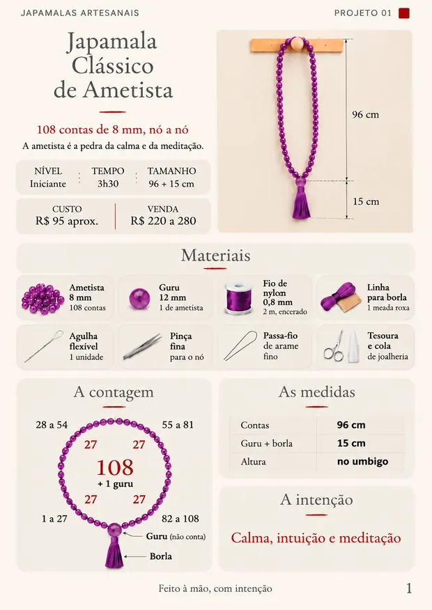
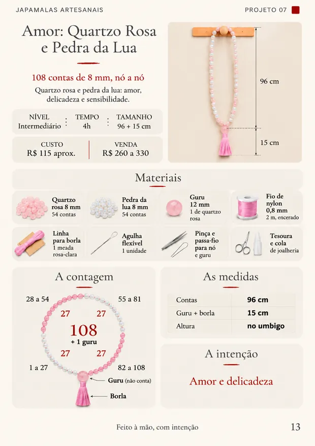
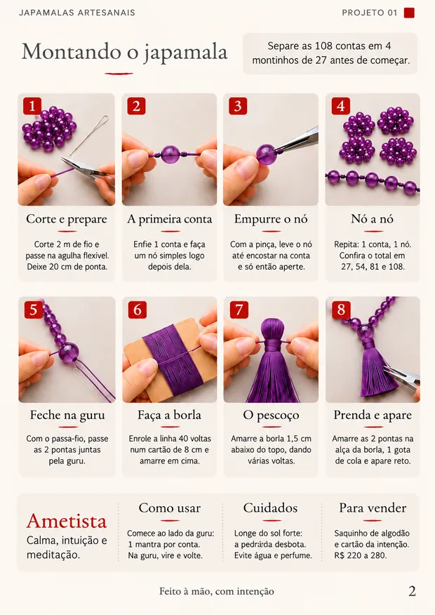
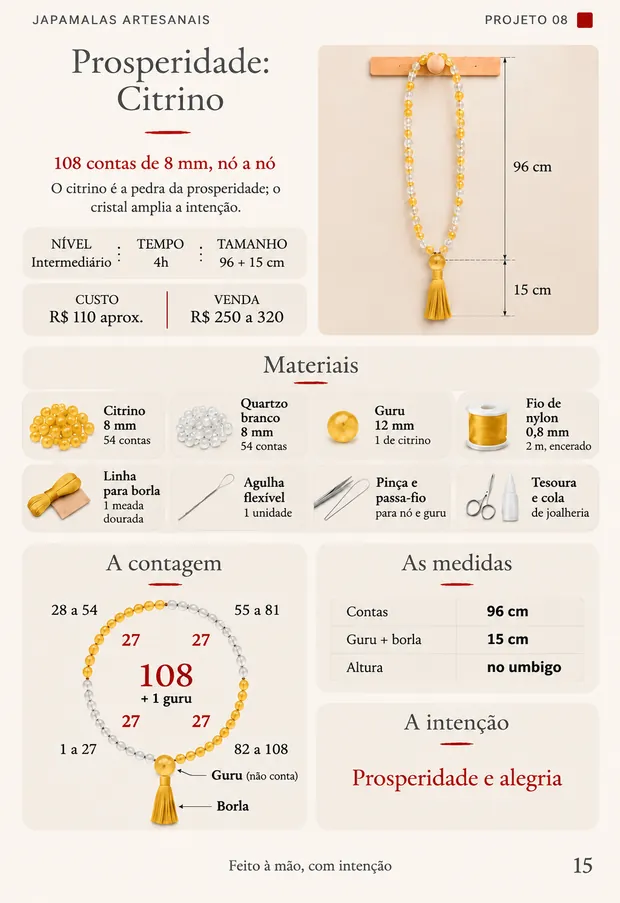
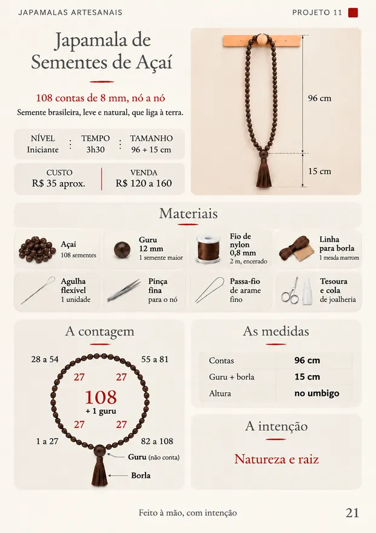
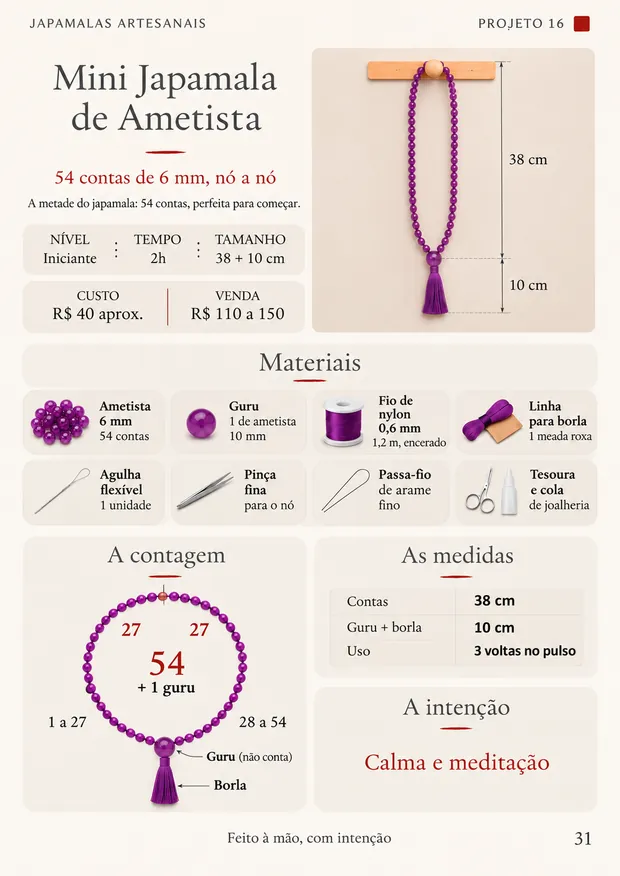
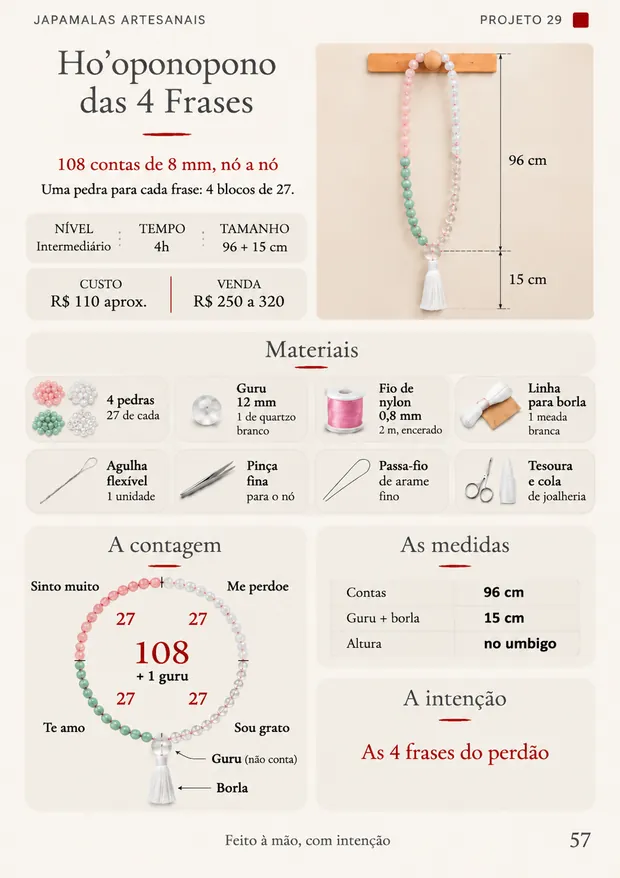
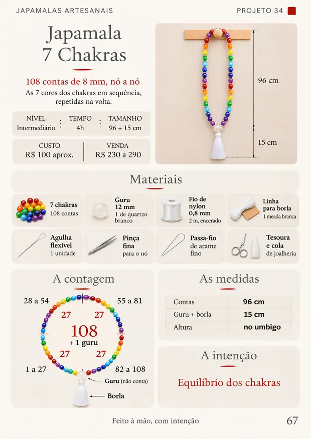
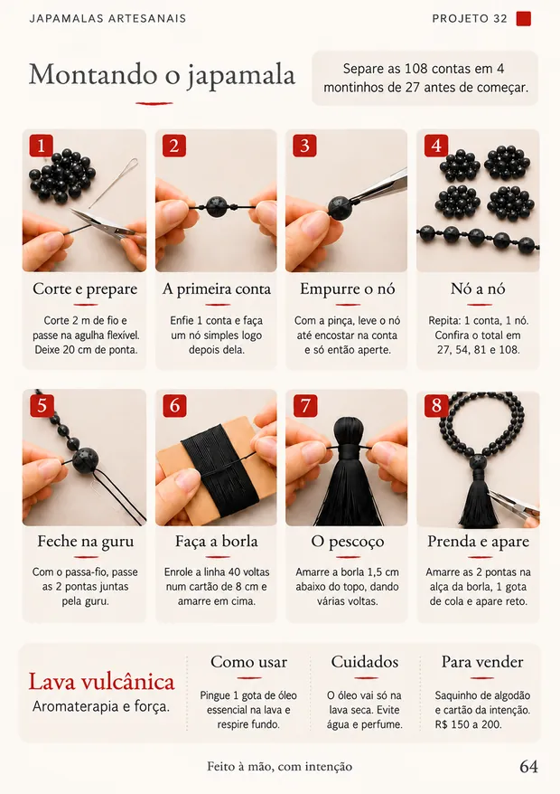
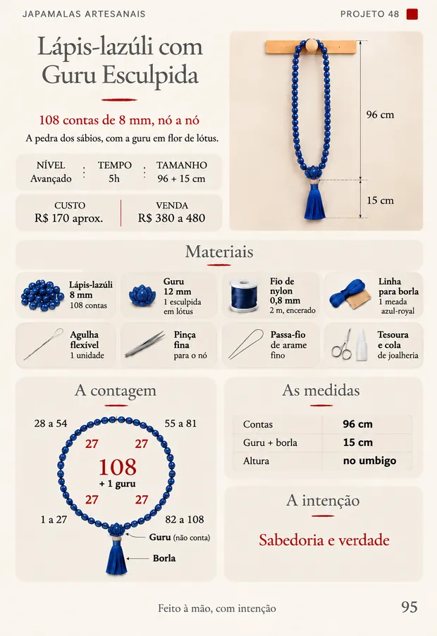
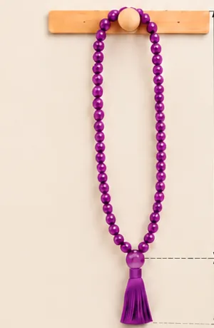
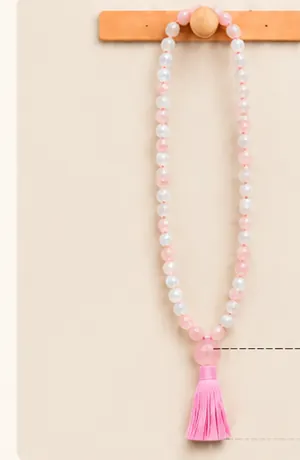
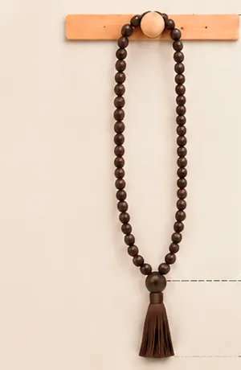
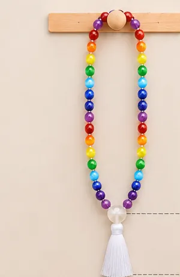
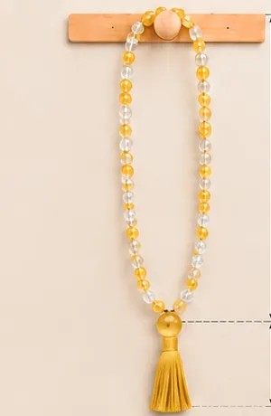
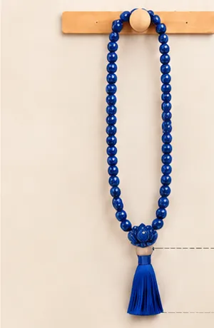
50 projetos separados por estilo e intenção, dos mais simples aos mais caprichados.
Consulte os projetos pelo celular enquanto monta, ou imprima as páginas pra acompanhar na mesa.
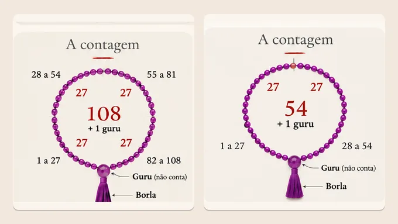
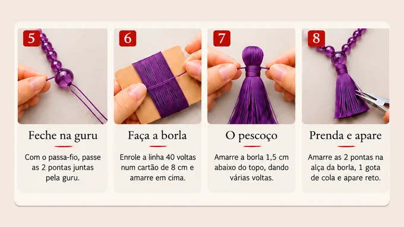
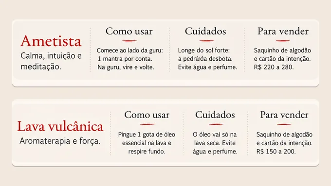
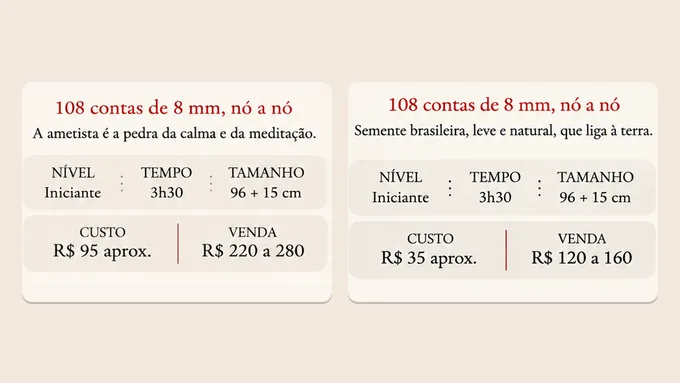
Depoimentos de quem já recebeu o material e fez o próprio japamala.
Pagamento único. Sem mensalidade.
pagamento único · acesso imediato
Acesse o material, escolha um japamala e comece a montar. Se em até 7 dias você achar que não é para você, é só pedir o reembolso e devolvemos 100% do valor. Sem perguntas e sem burocracia.
Não. Cada projeto mostra o japamala pronto, a lista de materiais, o mapa da contagem e as 8 etapas da montagem em foto. Comece pelos de nível Iniciante e deixe os avançados, com marcadoras e guru esculpida, para quando pegar o jeito.
As contas do modelo (pedra, semente ou madeira), uma conta guru, fio de nylon, linha para a borla, agulha flexível, pinça fina, passa-fio, tesoura e cola de joalheria. Cada projeto traz a lista com a quantidade de cada item e o custo aproximado. Com sementes naturais, como açaí e lágrima-de-nossa-senhora, o material sai por uns R$ 30 a 35.
Um japamala de 108 contas leva de 3h30 a 5 horas, dá para fazer numa tarde. Os mini japamalas de 54 contas ficam prontos em 2 a 2h30. Cada projeto mostra o tempo.
Tem. Além dos japamalas de 108 contas, o material traz mini japamalas de 54 contas e modelos de 27 contas para usar no pulso, mais rápidos de fazer e ótimos para presente.
O japamala é usado há milhares de anos para repetir uma oração sem perder a conta. Você pode usar com o seu mantra, com o Ho'oponopono, com a sua oração de sempre ou na meditação. Cada projeto mostra como usar.
É tudo digital. Assim que o pagamento é aprovado, você recebe no e-mail o acesso ao PDF. Nada é enviado pelo correio.
Sim. O PDF abre em qualquer celular, tablet ou computador. Se preferir, imprima as páginas para acompanhar a montagem na mesa.
Pode. Os japamalas que você fizer são seus, e cada projeto traz o custo do material e uma sugestão de preço de venda. O que não é permitido é revender ou compartilhar os arquivos do material.
Você tem 7 dias de garantia. Se não ficar satisfeita, peça o reembolso e devolvemos o valor integral.
Tenha acesso aos 50 projetos ilustrados e faça o seu japamala em casa, para usar, para presentear alguém que você ama ou para vender.
QUERO ACESSAR TUDO!